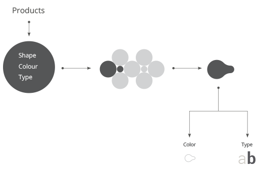
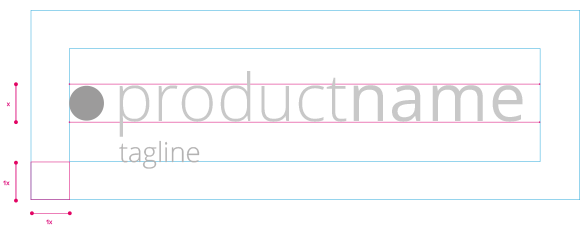
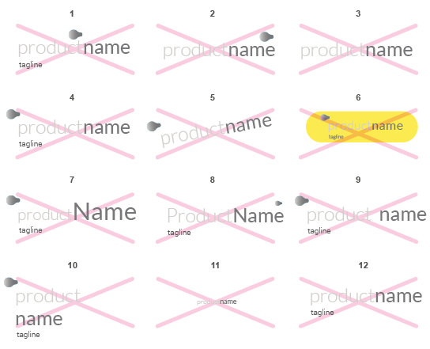

<link rel="import" href="../../assets/bower/polymer/polymer.html">

<dom-module id="page-our-logo">
	<style></style>
	
	<template>
		<div class="wrapper">
			<h1>Product brand</h1>
			<!-- SUBMENU -->
			<div class="contextual-menu">
				<div class="mobile-nav-toggle">
					Navigation <i class="clab clab-icon-arrow-down arrow"></i>
				</div>
				<ul>
					<li><a href="#/product-brand/brand-book">Brand book</a></li>
					<li class="active"><a href="#/product-brand/our-logo">Our logo</a></li>
				</ul>
			</div>
			<!-- END SUBMENU -->

			<div class="content">
				<h2>Our logo</h2>
				<section>
					<h3 class="component-title">Logo</h3>
					<div class="component-description">
						Our logo is the most distilled and ubiquitous element of our identity – a universal signature across all our communications.
						<br/>
						While it is a simple logo, we must treat it nicely. This page covers the correct usage.
					</div>
					<div class="component-example">
						
					</div>
				</section>

				<section>
					<h3 class="component-title">Sign</h3>
					<div class="component-description">
						The need to create forms derived from the master brand rationalizes in a simple and intuitive the various activities carried out by ContactLab.
						<br/>
						Each of these acquires its own identity and live with a parent sign master.
						<br/>
						The sign, derived from the master brand, identifies the area of products and is the single independent unit (product) in the system.
					</div>
					<div class="component-example">
						
					</div>
				</section>

				<section>
					<h3 class="component-title">Clear space</h3>
					<div class="component-description">
						To ensure that our logo is clearly visible, surround them with the clear space shown below-free of type, graphics, and other elements that might cause
						visual clutter-to maximize the recognition and impact of our identity.
					</div>
					<div class="component-example">
						
					</div>
				</section>

				<section>
					<h3 class="component-title">Backgrounds</h3>
					<div class="component-description">
						Use positive version of logo on clear background.
					</div>
					<div class="component-example">
						
					</div>
					<div class="component-description">
						Use negative version of logo on dark shade background.
					</div>
					<div class="component-example">
									
					</div>
				</section>


				<section>
					<h3 class="component-title">Logo alterations</h3>
					<div class="component-description">
						To maintain the integrity of the Product  logo, and to promote the consistency of the brand, it is important to use the logo as described in these guidelines.
						<br/>
						The examples shown here illustrate misuses of the Product logo that should be avoided.
					</div>
					<div class="component-example">
						
					</div>
				</section>
			</div>
		</div>


		
	</template>

	<script>

		Polymer({
			is:'page-our-logo'
		});

	</script>
</dom-module>